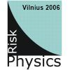

COST P10 Vilnius 2006
In 2006 scientists of Institute of Theoretical Physics and Astronomy, B. Kaulakys, V. Gontis, M. Alaburda, J. Ruseckas and T. Meškauskas, organized meeting for the participants of COST P10 Action "Physics of Risk". Meeting took place in Vilnius on 13th-16th of March. Here you can find the meetings abstract book and slides of some presentations.
Book with abstracts can be download by clicking here. While most of the slides, to download them click on the title, are made available bellow in the conference program styled list.
Saturday, 13th of March
First session: Complex systems and risk.
Chairpersons I. Kondor and J. Hołyst.
- I. Kondor "ONCE-CS Action European Complex Systems Society" (introductory talk).
- K. Kulakowski "Needs and decisions in ghetto" (invited talk).
- A. Juozapavičius "High preformance scientific computations and service on BalticGrid and LitGrid" (invited talk).
- I. Simonsen "Gain-loss asymmetry in stock markets: Empirical facts and model based explanation".
Second session: Complex systems and networks.
Chairpersons I. Kondor and J. Hołyst.
- I. Kondor "Critical phenomena in portfolio selection".
- L. Juodis "Self-organized criticality model of the nuclear fuel structure evolution".
- J. Kaupužs "Critical Exponents of 3D Ising Model from Theory and Monte Carlo Simulations of Very Large Lattices".
- D. Kirvelis "Organized complex system as informational closed-loop coding-decoding control system".
Sunday, 14th of March
Third session: Risk.
Chairperson P. Richmond.
- R. Mantegna "Individual decisions under risk: an investigation of observational economics" (keynote talk).
- V. Kvedaras "Macro-econometric modelling of the Lithuanian economy: from outer experience to data-consistent approach" (invited talk).
- J. Kertész "Some stylized facts of the market revisited and consequences for fluctuation scaling".
Fourth session: Risk.
Chairperson J. Kertész.
- P. Richmond "Wealth distributions: a review of models and empirical data".
- A. Kabašinskas "Multifractality and self-similarity in the Baltic States market".
- M. Patriarca "Statistical models of social systems".
- A. Sharkasi "Stock market behaviour for different time intervals with different volatility levels".
- V. Gontis "Modeling long-range trading activity by stochastic differential equations".
- G. Iori "Analytical and a microstructure analysis of stock pinning".
Fifth session: Networks.
Chairperson G. Rodgers.
- A. Erzan "From topology to dynamics in generic content based networks" (keynote talk).
- M. Gallegati "Business fluctuations in a credit-network economy" (invited talk).
- A. Hellervik "Distance dependent bond percolation in a geographical network model".
- J. P. Onnela "Weak ties in social networks".
Monday, 15th of March
Sixth session: Agent and network models.
Chairperson F. Slanina.
- Š. Raudys "Adaptation of multi-agent populations to environmental changes" (invited talk).
- M. Ausloos "Exo- and endo-genous shocks".
- S. Galam "When sociophysics produces new physical results".
- Ch. Deissenberg "The EURACE project: An agent-based software platform for European economic policy design with heterogeneous interacting agents: new insights from a bottom up approach to economic modelling and simulation".
- A. De Martino "Multi-asset minority games".
- J. Saramäki "Multi-asset minority games".
- M. Gligor "A moving-average-minimal-path-length method for UE country clustering according to macroeconomic fluctuations".
Seventh session: Agents and complex systems.
Chaiperson M. Ausloos.
- K. Staliūnas "Bose-Einstein condensation of financial(profit-seeking) bosons" (invited talk).
- J. Mimkes "The Nature of Economic Interactions".
- F. Slanina "Evolution of imitation structures".
- I. Miklashevich "The internal structure of socium origins from immanent hazy".
- T. Rekašius "Context dependent evolution and noninformative biological sequences".
Eighth session: Networks and complex systems.
Chairperson B. Kaulakys.
- J. Hołyst "Ising model on two connected Barabasi-Albert networks".
- S. Thurner "Dynamical complex networks of rational economical agents".
- J. M. Mendes "Structural properties of Complex networks".
- K. Peters "Disaster spreading in complex networks".
- S. Cebrat "Why does the age structure of the human population change?".
- J. Takala "Subcontracting risks in electronics manufacturing industry in China".
Ninth session: Complex systems and risk.
Chairperson V. Gontis.
- Z. Burda "Random matrices and risk management" (invited talk).
- R. Mahnke "About the risk to stick in a traffic jam".
- Y. Holovatch "Public transport networks: scaling and vulnerability".
- E. Klotins "Critical dynamics in nanoscale".
- A. Tamulis "Measure of complexity in the artificial living organisms".
- I. R. Andrei "EOM control of the LFF chaotic behavior in an ECSL- m:n phase synchronization".
Tuesday, 16th of March
Tenth session: Poster session.
- B. Tadic "Dynamic processes on complex networks: structuredynamics interdependences".
- R. Toivonen "A model for social networks".
- J. Feist "Nano-wire with one-sided surface roughness as a complex system".
- P. Repetowicz "Modeling distributions of personal income as Markov processes".
- V. Barkaline "Semantic information concept in sociodynamic modelling".
- C. Costea "Alternatives for the European educational system – the knowledge based economic applied research".
- J. Tamulienė "Quantum mechanical investigations of large supramolecules".
- D. Šatkovskienė "Additivity based method for conformational analysis of large molecular systems".
- P. Serapinas "Application of correlative characteristics of individual samples in multi element spectrometric pattern recognition".
- J. Takala "Integration of the environmental management system into other business operations systems".
- T. Kekäle "Power-law knowledge distribution in small software specialist teams".
- J. J. Blynas "Wastewater sludge and ASH as risk construction materials".
- A. Díaz-Guilera "Dynamics and communities".
Eleventh session: General session.
Chairperson P. Richmond.